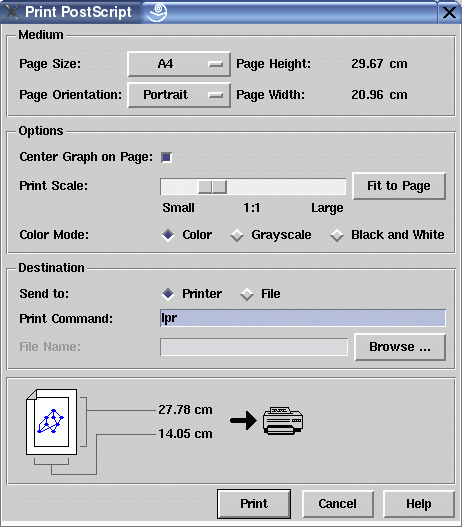

Print Dialog Window
This dialog window can be used to set options and target before printing the current graph in PostScript® format. The graph can be sent either to a PostScript® printer or saved in a file for import in another program which is able to import the PostScript® format. Read the notes about PostScript® below for more information. You cannot directly send the graph to the printer here, if it does not support PostScript®. In this case you have to use third-party software installed on your computer which has printer access. Either print the graph in PostScript® format to a file in this dialog (if your software can import PostScript® or use the export dialog to create a file in the more common GIF, TIFF or PNG formats. Afterwards import this file in your third-party software and print the graph there.
Initially, the options in this dialog are set so the graph is sent to a printer, fits on the page according to the specified size and is centered on the page. Before printing, the user is able to modify these settings. Beside using the window's dialog items, this can also be done with direct manipulation of the "paper picture" in the lower part of the window:
- Click on the symbolized graph (on the paper symbol) to switch the "Center Graph on Page" check button.
- Click on the paper symbol (i.e. on the border around the graph) to switch the "Page Orientation" option button.
- Click on the symbolized printer or disk icon to switch the "Send to" radio buttons.
Dialog Elements of the Print Window
-
Page Size
Specifies the size of the page used for printing the graph, either A3, A4, A5, Letter or Legal. Please refer to your printer documentation to choose the appropriate value. The resulting page size (in cm or inch) is displayed in the window. This size is used to center the graph correctly on a page and has no effect when the "Center Graph on Page" check button is not selected. -
Page Orientation
Specifies the orientation of the graph on the page, either Landscape or Portrait. The resulting page width and height (in cm or inch) is displayed in the window. The initial orientation is set automatically to get a maximal scale (e.g. Landscape, if the graph height is smaller than the width). -
Center Graph on Page
Select this check button to center the graph on the page. You have to choose the right page size of your printer to get proper results. Usually, centering is desired when a graph is printed on paper, but not when a PostScript® file is imported in another application. So, if the user switches the "Send to" radio buttons, then this check button is automatically set (centered for printers, not centered for files). Of course, this automatic setting can be corrected afterwards. -
Print Scale
This slider sets the scale in the PostScript® representation of the graph. The "Fit to Page" button calculates the maximal scale where the graph is completely visible on the page (but not larger than a scale of 1:1). This is also the scale used as initial value. After manipulating the scale, the actual width and height of the graph will be displayed (in cm or inch) in the picture in the lower part of the window. Width and height are drawn in red when the graph exceeds the current dimensions of the page. A special scale is 1:1 where one inch on the screen is one inch in the generated PostScript® file (for 72dpi screens). To get this scale, simply click on the 1:1 label. Note: the uDraw(Graph) PostScript® interface has a minimal scale with a magnification rate of 0.1 which is the "Small" value of the scale slider. No smaller scales are supported, so very large graphs may not fit on the page of the selected size. The "Fit to Page" button does not reduce the scale if the scale slider is already at the minimal value. Choose a larger page size or do not use the "Center Graph on Page" option in this case. -
Color Mode
With these radio buttons you can choose the mode that is used for printing. The mode is independent of the printers capabilities, so "Color" can be printed on a b/w printer and "Grayscale" can be printed on a color printer (which should give you identical color-less results). -
Send to
Used to select the target of the graph in PostScript® representation, either a printer specified by the "Print Command" field or a file specified by the "File Name" field. Switching these radio buttons also manipulates the "Center Graph on Page" check button for more convenience (see above). -
Print Command
This specifies the command used for printing the graph on a PostScript® printer after the "Print" push button is pressed. To enable the text entry, set "Send to" to "Printer". The required syntax is the same used in a UNIX® or Windows® shell for printing files, but without the file name. Options to the print command may also be typed here. Please read the print options if you are not sure what to enter here, especially on the Windows® platform. -
File Name
This specifies the file name where the PostScript® representation of a graph is stored after the print push button is pressed. To enable the text entry, set "Send to" to "File" or press the browse button. Either type the file name directly into this field or use the file browser for more convenience by pressing the browse button. The file browser is similar to the one used to save a graph. -
Print or Save
Push button to either print the graph in PostScript® format on a printer or save it in a file, according to the "Send to" radio buttons. -
Cancel
Push button to close the print dialog without performing any action. -
Help
Push button to start the online help system with this page.
Notes about PostScript® in uDraw(Graph)
The output generated by uDraw(Graph) is PostScript® Level-1 code, compliant to the Adobe® Document Structuring Conventions (DSC). To output is compliant to the guidelines for document exchange in "Encapsulated PostScript Format" (EPSF, often called EPS), so you can load a PostScript® graph created by uDraw(Graph) in third-party software that support EPSF import. The optional PostScript® preview part ("Encapsulated PostScript Interchange", EPSI) is not generated, so after importing a PostScript® graph created by uDraw(Graph) you may not see the graph on the screen, but it will appear on paper after printing. You can use third-party software packages to add the optional preview part to any PostScript® file, e.g. "pstoepsi". Please use a web search engine to find such software for your operating system.
uDraw(Graph) usually places a graph on one PostScript® page, regardless of the size of the graph visualization, so multi-page output for getting huge posters is not directly supported. You can use third-party software packages to split a large PostScript® file on several pages (to stick them together), e.g. "ps_poster". Please use a web search engine to find such software for your operating system.
- If the PostScript® scale you have selected with the "Print Scale" slider is too large, then the graph will not be completely visible on the page after printing. If you intend to send the graph to a printer, choose a suitable page size supported by the printer and press the "Fit to Page" button afterwards to avoid such problems.
- The coordinates of nodes and edges in PostScript® are taken from the screen representation of the graph. PostScript® fonts and screen fonts may vary in character width, so for the PostScript® graph it is possible that the text of a node is quite smaller than the node itself, in opposition to the screen representation. In rare cases, the text may overlap the boundary of a node.
- Screen font "Helvetica" is always replaced by the PostScript® font "HelveticaNarrow" to avoid problems with overlapping.
- The uDraw(Graph) default font "Lucida" is not a popular font in PostScript®. So, the PostScript® files generated by uDraw(Graph) will always check if the PostScript® interpreter in use (e.g. the printer) supports "Lucida" and will use font "Helvetica" otherwise.